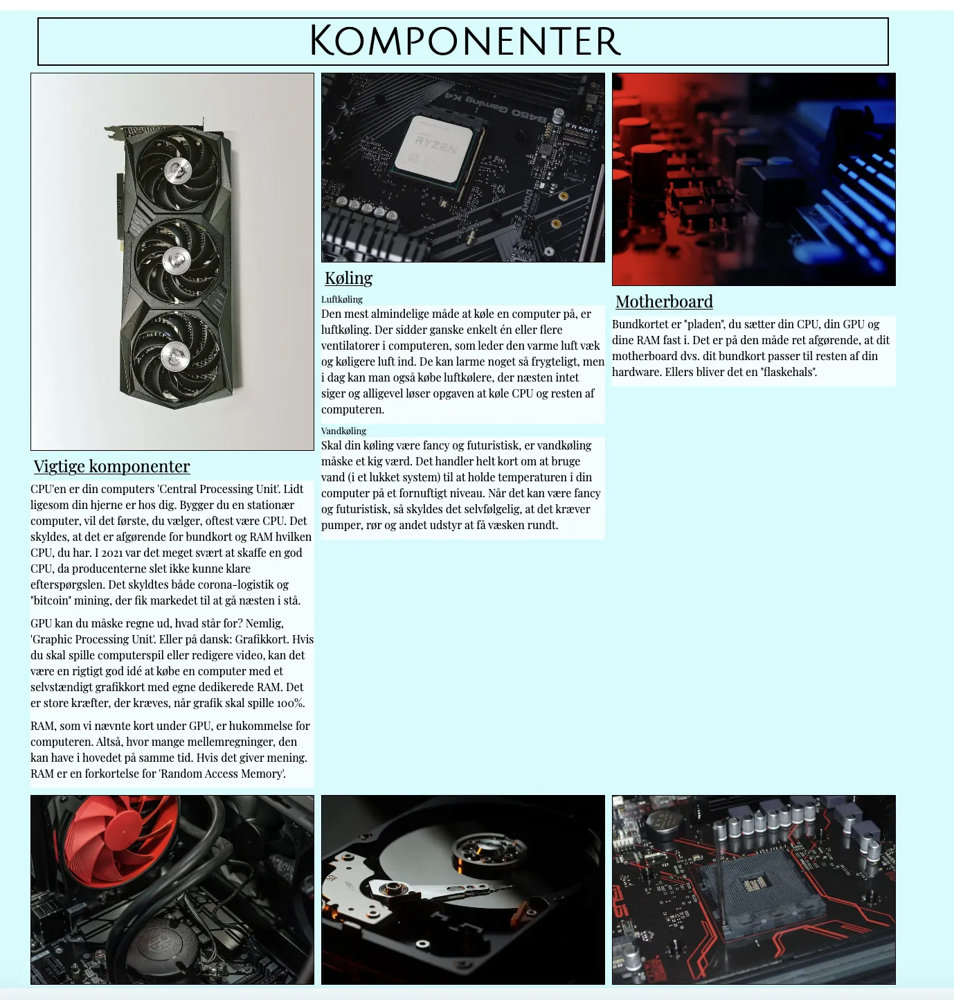
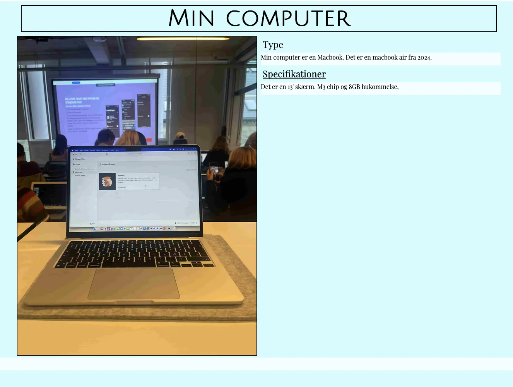
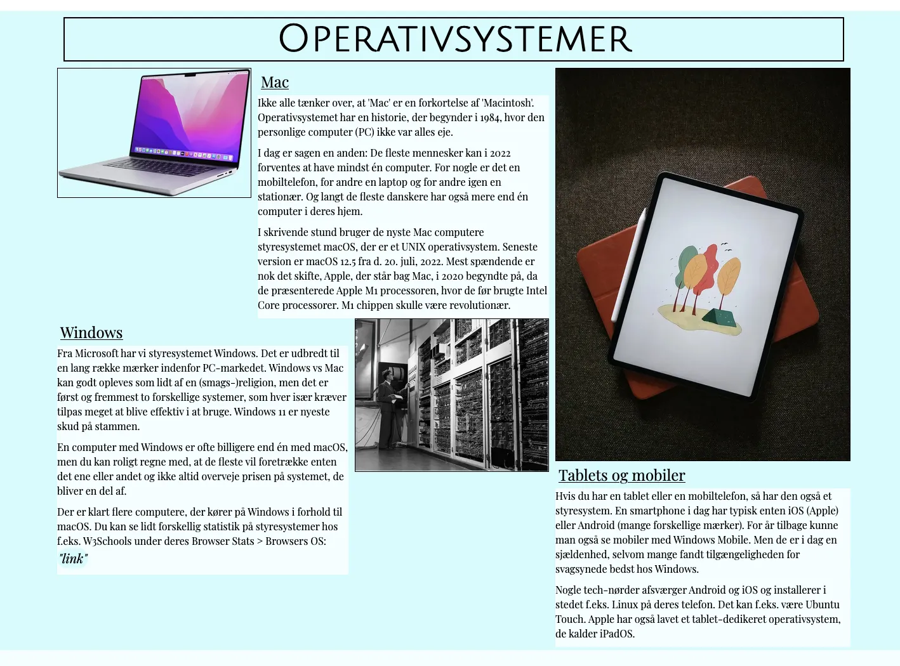
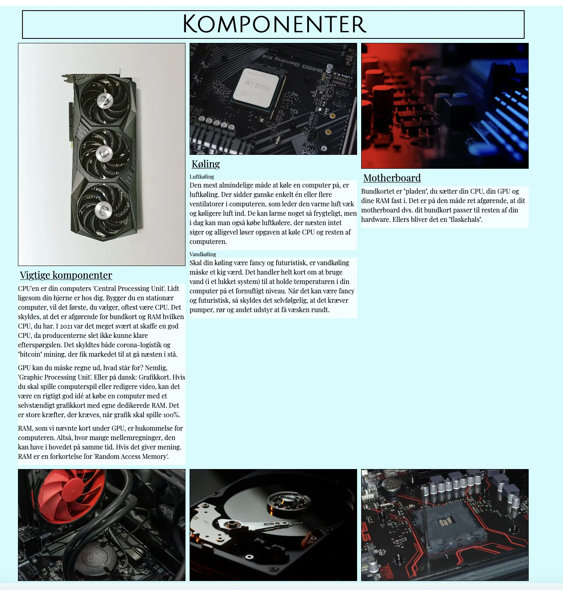
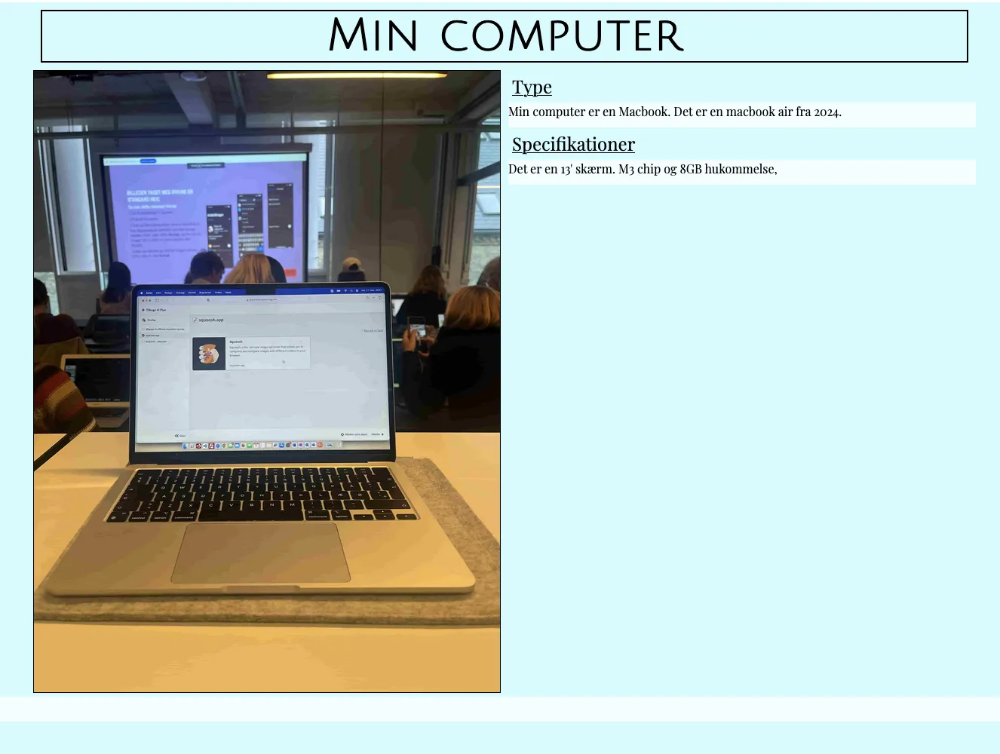
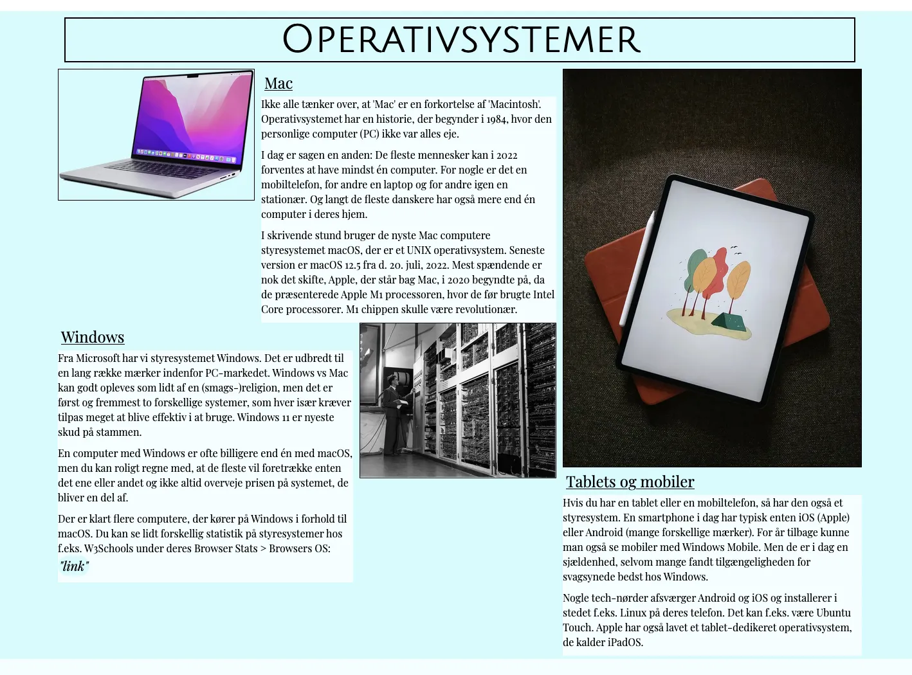

tilbage til temaer
02
Grundlæggende web
I tema 2 blev vi introduceret til de grundlæggende sprog og programmer (HTML og CSS) ved kodning, heraf planlægning, design, udvikling og optimering af de brugerflader, vi fik udviklet. I den sammenhæng fik vi dannet en god forståelse for både brugertests, brugeroplevelser og hvordan det spiller ind i den færdige løsning, ligeledes med hensyn til bæredygtighed.
Opgaven: 02.01.01 Website
Opgaven lød, at jeg skulle fremstille et website baseret på de udleverede wireframes og layoutdiagrammer. Websitet skulle bestå af 5 sider med farve og to forskellige fonte. De udleverede layoutdiagrammer angiver ligeledes id- og klasse navne. Produktet skal have 2 css-dokumenter (et med styling og et med layout). Heraf skal siden validere uden fejl og afleveres på eget domæne.
Min løsning:
I tema 2 fik jeg lavet et responsivt site med HTML og CSS i programmet Visual Studio Code, der blev lagt op på mit domæne gennem programmet FileZilla. Alt indholdet, wireframes, layoutdiagrammer, billeder og tekst blev tildelt af skolen, og derfor var opstilling den vitale del af undervisningen og læringsprocessen. Hjemmesiden var deraf en del af Studiestartsprøven i starten af semesteret, der blev bedømt til godkendt.
Processen forløb fra mobilesite til website til et responsivt layout. Til en start blev indhold lagt ind, som det skulle lægge i mobilesite, derfra blev det kodet med grid i website. Yderligere blev der tilføjet en burgermenu, der meget kort introducerede os til JavaScript, som senere blev forklaret i dybden.
Jeg fik selv tilføjet tekst omkring min egen computer, og tilføjede nogle fonte, jeg selv synes var passende i sammenhæng med farvevalget.
De vigtigste færdigheder, jeg tog med fra tema 2:
- Oprettelse af domæne og forståelse for FileZilla.
- Forståelse af og arbejdet med wireframes/layoutdiagrammer, der gør kodningsoverblikket en del nemmere.
- Et indblik i fordelene ved mobilefirst, og derfor også hvordan man laver et responsivt site med mediaquery.
- Inspect/developer tools, der gør det nemmere at finde ens fejl og heraf validering, både gennem VSC (Visual Studio Code) og valideringssider.
- Tage hensyn til bæredygtighed og bl.a. kunne se nødvendigheden i anvendelse af f.eks. Squoosh-siden ved formindskelse af billede størrelser.
- Anvendelsen af fonte fra nettet.
Fra tema 2 blev jeg en del mere sikker i kodning og fik en basal forståelse for, hvordan det hele fungerer. Heraf gik jeg til næste tema med god indsigt i grid-opstilling, mediaquery og diverse CSS-elementer.
Gå til hjemmesiden ->http://mayamaya.dk/kea/02_web/01_website/website/index.html
 







I temaet legede vi med grid-opstilling på galleri-siden, set på første billede i scroll-billederne. I disse slags opstillinger indsættes alle billeder, der bruges i opsætningen, ind på HTML-siden. Deraf kan grid defineres i CSS’en, tilknyttet siden. Heraf får div’en klassen grid_1-1-1-1, da grid-opstillingen former 4 kolonner i lige store størrelser. I forlængelse af det kan jeg med de yderligere billede-klasser fortælle hvert billede, hvor de skal lægge sig i forhold til hinanden, med grid-column defineret med span.
En anden vigtig kode at tage med fra tema 2 er reset-koderne til den bedst mulige opstilling. Koden giver siden et reset på alle indstillinger fra start af kodningen. Heraf kodes der som normalt med definerede størrelser, og bruges derfor til billeder (img) og tekst.